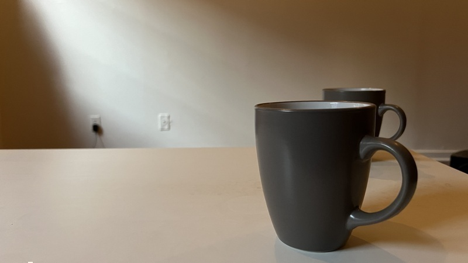

today, I am reading about fata morganas on the internet while playing around with Nate Smith drum samples in SuperCollider



poured myself a cup of coffee, got up to do something else, poured myself another cup of coffee. Now I have two cups of coffee.
there are too many emails, and I am, in part, to blame
one of those fun little regional facts that only folks who live in Philadelphia would know is that every resident of Philadelphia is from New Jersey


williamthazard at pm.me